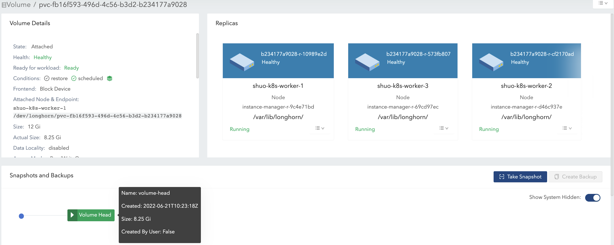
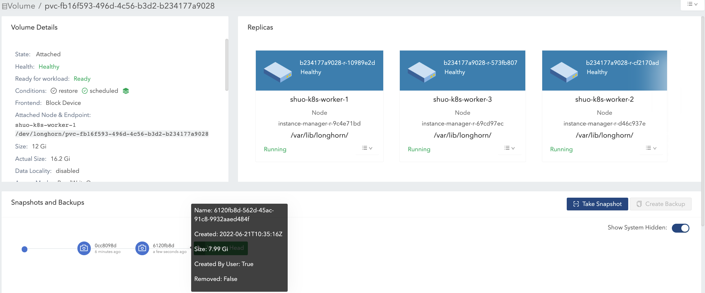

|
この文書は自動機械翻訳技術を使用して翻訳されています。 正確な翻訳を提供するように努めておりますが、翻訳された内容の完全性、正確性、信頼性については一切保証いたしません。 相違がある場合は、元の英語版 英語 が優先され、正式なテキストとなります。 |
ボリュームサイズ
ボリューム Size:

この値は、ボリューム作成時に指定したもので、使用中のボリュームに利用可能なスペースの量を表します。
この概念を理解するための他の方法は次のとおりです：
-
ボリューム自体はKubernetesのCRDオブジェクトであり、ボリュームデータはレプリカに保存されます。この値は、各レプリカの名目サイズを表します。
-
SUSE Storage レプリカは スパースファイル を使用してデータを保存します。この値は、スパースファイルが拡張できる最大サイズを表します。
レプリカは、ボリューム作成時にこの名目サイズをカバーするのに十分な割り当て可能なスペースを持つノードにスケジュールされます。詳細については、ノードのスペース使用状況を参照してください。
|
最大ボリュームサイズは、ディスクのファイルシステムに基づいています（例えば、`ext4`の場合は16383 GiB）。 |
ボリューム Actual Size

この値は、ノード上の各レプリカが使用するスペースの量（ボリュームヘッドとスナップショットを含む）を表します。
すべての履歴データ（スナップショットに保存されている）とアクティブデータが計算に含まれるため、この値はユーザー定義の名目サイズを超えることがあります。
SUSE Storage UIは、ボリュームが実行中のときのみこの値を表示します。
例
この例では、ボリューム size と actual size が一連のIOおよびスナップショット関連の操作の後にどのように変化するかを説明します。
この図は、*1つのレプリカ*のファイル構成を示しています。ボリュームヘッドとスナップショットは、実際には上記で言及したスパースファイルです。

-
12 Giのボリュームを単一のレプリカで作成し、それをノードにアタッチしてマウントします。図1を参照してください。
-
空のボリュームについて、名目サイズの`size`は12Giで、`actual size`はほぼ0です。
-
ボリュームにはメタ情報が含まれているため、`actual size`は260 Miで、正確には0ではありません。
-

-
ボリュームのマウントポイントに4 Giのデータ（データ#0）を書き込みます。4 Giのデータのためにレプリカ内の割り当てられたブロックにより、`actual size`は4 Gi増加します。一方、ファイルシステム内の`df`コマンドも4 Giの使用済みスペースを示します。図2を参照してください。

-
4 Giのデータを削除します。その後、`df`コマンドはファイルシステムの使用済みスペースがほぼ0であることを示しますが、`actual size`は変わりません。
ユーザーはデフォルトで、4 Giのデータを削除した後、ボリューム`actual size`が縮小されていないことを確認できます。SUSE Storageはブロックレベルのストレージシステムです。したがって、ファイルシステム内の削除は、削除されたファイルに属するブロックを未使用としてマークするだけです。現在、SUSE StorageはTRIM/UNMAP操作を自動的または定期的に適用しません。ファイルシステムのトリムを行いたい場合は、詳細についてこのドキュメントを確認してください。
-
その後、4 Giのデータ（データ#1）を書き直すと、ファイルシステム内の`df`コマンドが再び4 Giの使用済みスペースを示します。しかし、`actual size`は4 Gi増加し、8.25 Giになります。図3(a)を参照してください。
削除後、ファイルシステムは最近削除されたファイルから最近解放されたブロックを再利用するかどうかはファイルシステムの設計によります。詳細については さまざまなファイルシステムのブロック割り当て戦略を参照してください。ボリュームの名目上の`size`が12 Giの場合、最終的な`actual size`は4 Giから8 Giの範囲になります。ファイルシステムは解放されたブロックを再利用するかどうかは不明です。一方、ボリュームの名目上の`size`が6 Giの場合、最終的な`actual size`は4 Giから6 Giの範囲になります。これは、ファイルシステムが2回目の書き込みで解放されたブロックを再利用しなければならないからです。図3(b)を参照してください。
したがって、IOパターンに応じて重い書き込みタスクを保持するボリュームに適切な名目上の`size`を割り当てることで、ディスクスペースの使用がより効率的になります。

-
スナップショット#1を作成します。図4を参照してください。
-
現在、データ#1はスナップショット#1に保存されています。
-
新しいボリュームヘッドのサイズはほぼ0です。
-
ボリュームヘッドとスナップショットを含めると、`actual size`は8.25 Giのままです。
-

-
マウントポイントからデータ#1を削除します。
-
データ#1のファイルシステムレベルの削除情報は、現在のボリュームヘッドファイルに保存されています。スナップショット#1では、データ#1は依然として履歴データとして保持されています。
-
`actual size`は依然として8.25 Giです。
-
-
ボリュームマウントに8 Giのデータ（データ#2）を書き込み、さらにもう一つのスナップショット（スナップショット#2）を作成します。図5を参照してください。
-
現在、`actual size`は16.2 Giで、ボリュームの名目`size`よりも大きくなっています。
-
ファイルシステムの観点から、2つのスナップショット間の重複部分は、再利用または上書きされるべきブロックと見なされます。しかし、SUSE Storageの観点からは、これらのブロックは実際には別のスナップショット/ボリュームヘッドに保持されている新しいものです。図6の2つのスナップショットを参照してください。
ボリュームヘッドはボリュームの最新データのみを保持し、各スナップショットは履歴データとアクティブデータの両方を保存することができ、最大サイズのスペースを消費します。したがって、ボリュームヘッドとすべてのスナップショットのサイズの合計であるボリューム`actual size`は、ユーザーが指定したサイズよりも大きくなる可能性があります。
ユーザーがボリュームのスナップショットを撮影しない場合でも、再構築、拡張、またはバックアップなどの操作があり、システム（隠れた）スナップショットの作成につながることがあります。その結果、ボリューム`actual size`がサイズよりも大きくなることは、いくつかの使用ケースでは避けられません。
-

-
スナップショット#1を削除し、パージが完了するのを待ちます。図7を参照してください。
-
ここでSUSE Storageはスナップショット#1をスナップショット#2と統合します。
-
統合中の重複部分では、新しいデータ（データ#2）がブロックに保持されます。その後、いくつかの履歴データが削除され、ボリュームが縮小されます（例では16.2 Giから11.4 Giに）。
-

-
既存のデータ（データ#2）をすべて削除し、ボリュームマウントに11.5 Giのデータ（データ#3）を書き込みます。図8を参照してください。
-
これにより、ボリュームヘッドの実際のサイズは11.5 Giになり、ボリュームの合計実際のサイズは22.9 Giになります。
-

-
ボリュームの唯一のスナップショット（スナップショット#2）を削除してみてください。図9を参照してください。
-
ボリュームヘッドの直後にあるスナップショットはクリーンアップできません。 ユーザーがこの種のスナップショットを削除しようとすると、SUSE Storageはスナップショットを「削除中」とマークし、それを隠し、スナップショットファイルのためにボリュームヘッドとスナップショットの間の重複部分を解放しようとします。 最後の操作はSUSE Storageで「スナップショットプルーン」と呼ばれ、v1.3.0以降で利用可能です。
-
例では、スナップショットとボリュームヘッドの両方が名目上のスペースのほとんどを使用しているため、重複部分はスナップショットの実際のサイズにほぼ等しくなります。プルーニング後、スナップショットの実際のサイズは259 Miに減少し、ボリュームは22.9 Giから11.8 Giに縮小されます。
-

ここでは、例に関連するディスクスペースの使用に関する重要な事項をまとめます：
-
未使用のブロックは解放されません。
SUSE StorageはTRIM/UNMAP操作を自動的に発行しません。したがって、ファイルシステムからファイルを削除しても、ボリュームの実際のサイズは減少/縮小しません。必要に応じてドキュメントを確認し、自分で対処する必要があるかもしれません。
-
割り当てられたが未使用のブロックは再利用されません。
ファイルを削除して新しいファイルを書き込むと、実際のサイズが増加し続けることになります。ファイルシステムは、最近削除されたファイルから最近解放されたブロックを再利用しない可能性があるためです。したがって、IOパターンに応じて重い書き込みタスクを保持するボリュームに適切な名目サイズを割り当てることで、ディスクスペースの使用がより効率的になります。
-
スナップショットを削除することにより、使用されているブロックの重複部分が、ブロックがファイルシステムによって最近解放されたものであるか、まだ履歴データを含んでいるかに関係なく排除される可能性があります。
ボリューム向けスペース設定の提案
-
既存のボリュームの実際のサイズが増加し続ける場合に備えて、ディスクに十分な空きスペースをバッファとして確保してください。
-
ボリュームの最大スペース消費の一般的な推定値は
(N + 1) x head/snapshot average actual size
-
ここで、`N`はボリュームが含むスナップショットの総数（ボリュームヘッドを含む）であり、追加の`1`はスナップショット削除に必要な一時的なスペースのためです。
-
スナップショットの平均実際のサイズは異なり、使用ケースに依存します。 ボリュームのためにスナップショットが定期的に作成される場合（例えば、スナップショットの定期的なジョブに依存して）、平均値はスナップショット作成間隔内のボリュームの平均変更データサイズになります。 ボリュームに重い書き込みタスクがある場合、ヘッドおよびスナップショットの平均実際サイズは、ボリュームの名目サイズに相当します。この場合、ディスクスペースの枯渇を避けるために、
Storage Over Provisioning Percentageを100%未満に設定する方が良いです。 -
いくつかの拡張されたケース：
-
スナップショットの保持数が`N`である定期的なジョブが1つあります。その後、式は次のように拡張されます：
(M + N + 1 + 1 + 1 + 1) x head/snapshot average actual size
-
式の説明：
-
`M`はユーザーが手動で作成したスナップショットです。定期的なジョブはこの種のスナップショットを削除する責任を負いません。それらはユーザーだけが削除できます。
-
`N`はスナップショット定期ジョブの保持数です。
-
1つ目の`1`はボリュームヘッドを意味します。
-
2番目の`1`は、定期的なジョブによって作成された追加のスナップショットを意味します。定期的なジョブは常に新しいスナップショットを作成し、自身で作成した現在のスナップショットが保持数を超えると最も古いスナップショットを削除します。削除が始まる前に、追加のスナップショットがあり、それが追加のディスクスペースを占有する可能性があります。
-
3つ目の`1`はシステムスナップショットです。再構築がトリガーされるか拡張が発行されると、SUSE Storageは操作開始前にシステムスナップショットを作成します。このシステムスナップショットはすぐにクリーンアップできない場合があります。
-
4つ目の`1`は、スナップショットの削除/パージに必要な一時的なスペースのためのものです。
-
-
-
ユーザーはスナップショットを全く必要としていません。（手動で作成された）スナップショットも定期的なジョブも起動されません。設定 _自動的にシステム生成スナップショットをクリーンアップが有効であると仮定すると、式は次のようになります：
(1 + 1 + 1) x head/snapshot average actual size
-
非常に多くのスペースが使用される最悪のケース：
-
ある時点で最初の再構築または拡張がトリガーされ、最初のシステムスナップショットが作成されます。
-
最初の再構築の前後のパージは何も行いません。
-
-
新しいボリュームヘッドにデータが書き込まれ、2回目の再構築または拡張が何らかの形でトリガーされます。
-
2回目の再構築の前のスナップショットパージは、最初のシステムスナップショットの縮小を引き起こす可能性があります。
-
その後、2回目のシステムスナップショットが作成され、再構築が開始されます。
-
再構築が完了した後、次のスナップショットパージによって2つのシステムスナップショットが統合されます。この統合には一時的なスペースが必要です。
-
-
2回目の再構築のためのその後のスナップショットパージ中に、新しいボリュームヘッドにさらにデータが書き込まれます。
-
-
式の説明：
-
最初の`1`はボリュームヘッドを意味します。
-
2番目の`1`は、最悪のケースで言及された2番目のシステムスナップショットです。
-
3番目の`1`は、2つのシステムスナップショットの削除/統合に必要な一時スペースのためのものです。
-
-
-
-
-
-
ボリュームのスナップショットをあまり保持しないでください。
-
スナップショットをクリーンアップすることで、ディスクスペースを回収するのに役立ちます。スナップショットをクリーンアップする方法は2つあります：
-
SUSE Storage UIを介してスナップショットを手動で削除します。
-
保持期間1のスナップショットの定期ジョブを設定すると、スナップショットが自動的にクリーンアップされます。
また、スナップショットのクリーンアップとマージ中に、ボリュームの名目`size`までの追加スペースが必要であることに注意してください。
-
-
ワークロードに応じた適切なボリュームの名目サイズ`size`を設定してください。
トラブルシューティング
ワークロードで`no space left on device`エラーが発生しています。
"`no space left on device`"エラーに対処するには、ボリュームが満杯であることとノードディスクが満杯であることの違いを理解することが、SUSE Storageにおける適切なストレージ管理にとって重要です。
ボリュームが満杯
ボリュームが満杯であるとは、そのマウントされたファイルシステムが容量制限に達したときです。* データの書き込みは"`no space left on device`"エラーで失敗します。* ボリュームのレプリカのホストディスクには、他のボリュームのための空きスペースがまだあるかもしれません。
-
特性：
-
`df`コマンドは、マウントされたファイルシステムの使用率が100%であることを示します。
-
アプリケーションは、ボリュームマウントポイントに新しいデータを書き込むことができません。
-
例：
$ df -h /mnt/longhorn-volume-example-dir
Filesystem Size Used Avail Use% Mounted on
/dev/longhorn-volume-example 12G 12G 0 100% /mnt/longhorn-volume-example-dirノードディスクが満杯
ノードディスクには、ボリュームがスリムプロビジョニングされているため、ボリューム操作を収容するのに十分なスペースがないかもしれません。また、レプリカのサイズは増え続けます。* ボリュームのファイルシステムが満杯でなくても、データの書き込みは"`no space left on device`"エラーで失敗します。* 作成、拡張、スナップショット管理などのボリューム操作は制限される可能性があります。* 新しく作成されたボリュームレプリカは、満杯のディスクにスケジュールできません。
-
特性：
-
ボリュームが満杯でないにもかかわらず、アプリケーションはボリュームマウントポイントに新しいデータを書き込むことができません。
-
SUSE Storage これらのディスクに対する操作、例えばレプリカの作成、再構築、またはスナップショット操作は失敗する可能性があります。
-
これらのノードディスクにレプリカがあるボリュームが影響を受けます。
-
ディスクの空き容量不足のシナリオに対するデータ整合性保護
複数のレプリカが同時に “no space left on device” エラーに遭遇した場合、SUSE Storage はデータ整合性保護を実施します。すべての書き込み可能なレプリカが空き容量不足のディスク上にある場合、システムは同じ量のデータを書き込んだレプリカの最大数を保持します（最も多く書き込まれたバイト数）。これにより、データの整合性が確保されます：
-
同じ量のデータを書き込んだ最大数のレプリカを保持する。 これにより、大規模なレプリカ再構築操作を回避し、ノードディスクが空き容量の問題から回復した際に効率的な再構築を可能にし、ユーザーがデータを一貫して読み取れるようにします。
-
他のレプリカを *
ERRとしてマークし、データの破損を防ぎます。 これにより、ユーザーは保持されたレプリカから一貫してデータを読み取ることができ、ERRとしてマークされたレプリカは、ノードディスクが空き容量の問題から回復した際にデータ整合性を維持するために保持されたレプリカから再構築されます。 -
すべての基盤ディスクが満杯である場合でも、ボリュームのアクセス可能性を 維持 します。
例えば、レプリカ A、B、C がそれぞれ 1MB、2MB、2MB 書き込んだ後に空き容量エラーに遭遇した場合、レプリカ B と C はアクティブのままで、レプリカ A は ERR としてマークされます。
解決方法
no space left on device エラーに遭遇した場合、まずボリュームのファイルシステム使用状況を確認し、その後ボリュームレプリカをホストしているディスクを確認してください。
-
ボリュームのファイルシステム使用状況を確認する： ボリュームのファイルシステム使用状況が 100% の場合（次のコマンドを使用）：
df -h /mnt/your-volumeボリュームを拡張するか、ファイルシステムから不要なファイルを削除する必要があります。
-
ノードディスク使用状況を SUSE Storage確認する： SUSE Storage UI の ノード > ノードディスク でディスク使用状況を確認するか、コマンドラインを使用してください：
# Check through SUSE Storage UI: Node > Node Disk # Or check the data path mount point df -h /var/lib/longhorn # default data pathディスク使用状況が 100% の場合、ワークロードを回復するために次の手順を実行してください：
-
ワークロードを縮小してください。
-
ディスクのサイズを拡張するか、ディスク上の孤立したレプリカディレクトリや使用済みバックイメージなどの不要なファイルを削除してください。
-
ワークロードをスケールアップしてください。
-